Pecorino primo sale
Pecorino primo salePecorino tradizionale italiano, senza stagionatura, solo tutto il gusto del formaggio appena prodotto. Ottimo con verdure fresche e insalate.
- Stagionatura
- Senza stagionatura
- Formati
- Forma – 2 kg
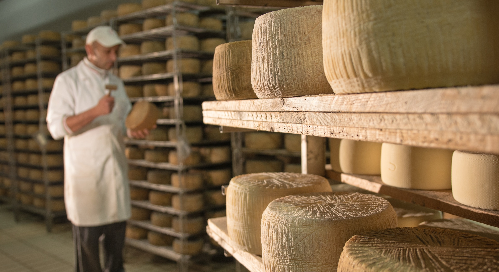
Vengono prodotte circa 40 diverse referenze, dai pecorini DOP, ai formaggi caprini; ricotte fresche e stagionate, e tante altre specialità casearie sarde.
Dai freschissimi agli stagionati, il nostro assortimento di pecorini copre tutte le esigenze commerciali, garantendo alto valore aggiunto in ogni fascia. I nostri classici stagionati non subiscono trattamenti con conservanti in crosta. La stagionatura a crosta naturale, fatta come da tradizione, alla vecchia maniera, è una nostra grande peculiarità.
Pecorino tradizionale italiano, senza stagionatura, solo tutto il gusto del formaggio appena prodotto. Ottimo con verdure fresche e insalate.
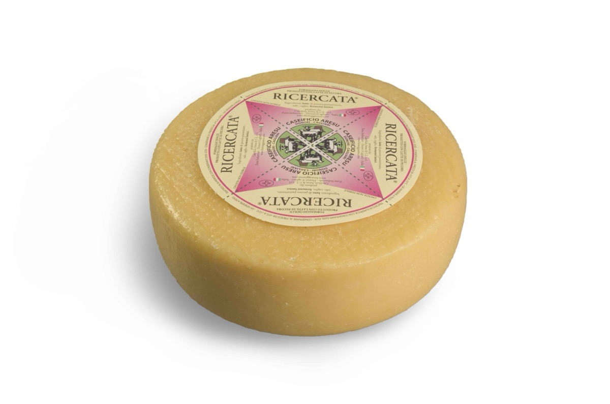
Pecorino dolce a pasta molle, maturazione 20-30 giorni. Crosta liscia e sottile di colore bianco. Pasta bianca, morbida, compatta. Consumo ideale da tavola.
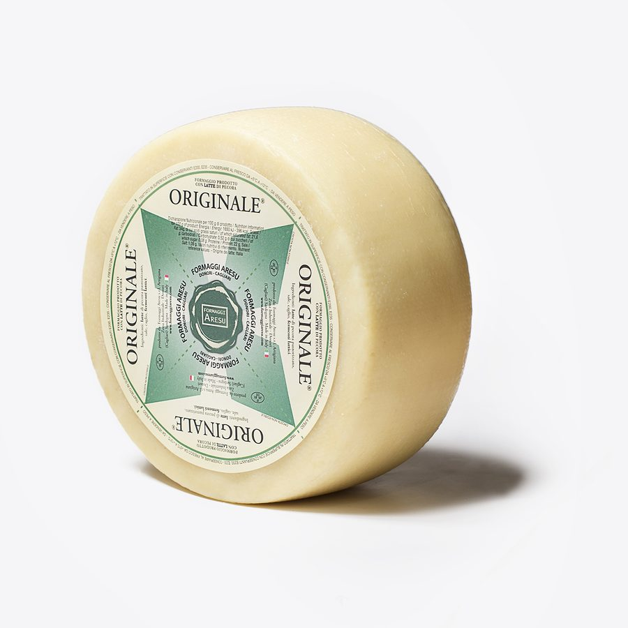
Pecorino fresco, maturazione 20-30 giorni. Disponibile in tre formati differenti per ogni esigenza commerciale. Pasta elastica, ideale da arrosto, per esaltarne le caratteristiche organolettiche.
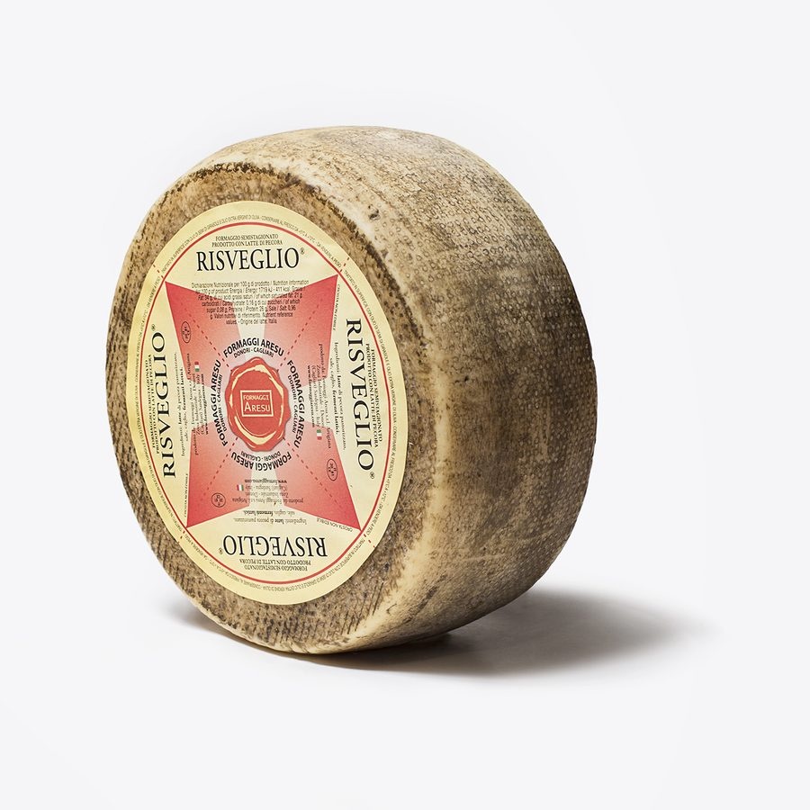
Pecorino da tavola, a crosta naturale. Stagionatura di 3 mesi garantiti. Pastoso, con un aroma completo. Ideale come antipasto.
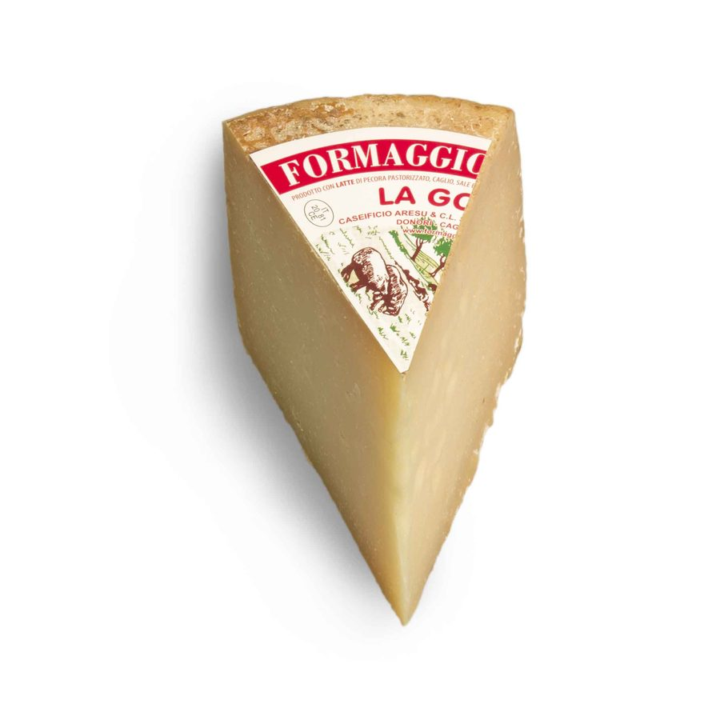
Pecorino stagionato classico, con una maturazione di minimo 7 mesi, si posiziona tra le migliori marche italiane del segmento. Pasta compatta, gusto deciso ma equilibrato. Si presta alla grattugia.
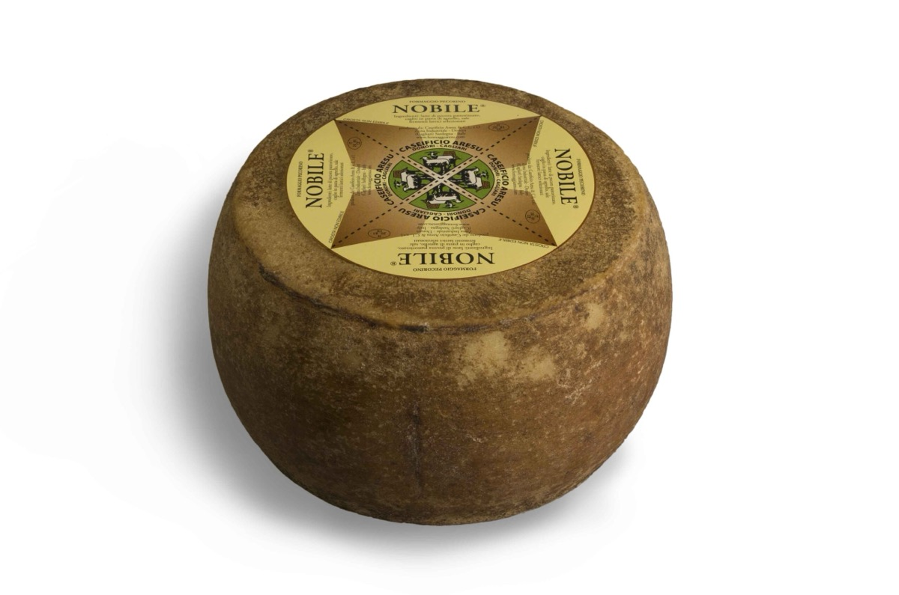
Lavorazione tradizionale sarda per un pecorino stagionato superiore, prodotto con il caglio in pasta di agnello sardo. Stagionatura 7 mesi. Pasta compatta, friabile. Gusto superiore, con accenni di piccante.
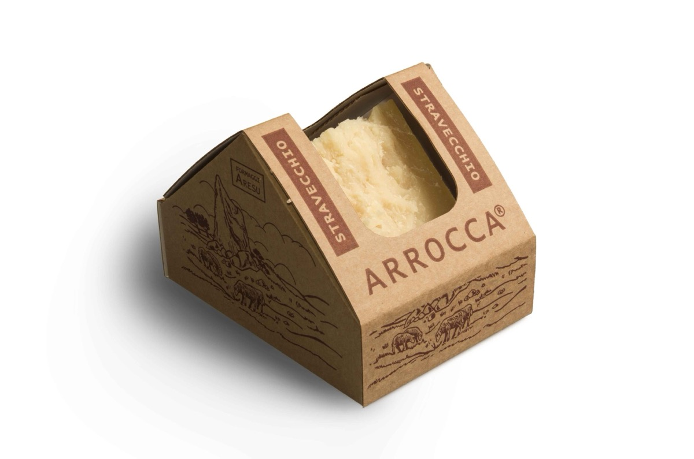
L’eccellenza, selezionata solo dalla famiglia Aresu viene accompagnata ad una maturazione che può arrivare anche ai 3 anni. In questo lungo periodo, il pecorino Arrocca® si migliora, portando il gusto al confine della perfezione.
Pecorino da tavola, dal colore accattivante e dai formati tradizionali italiani. Stagionatura 30-40 giorni. Pasta media, ottimo da antipasto.
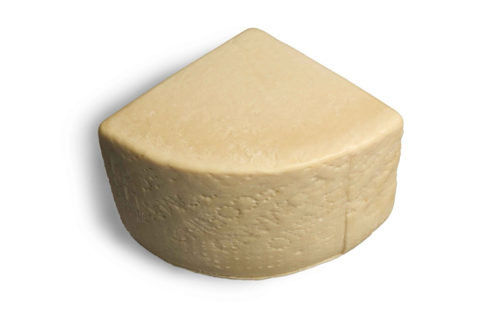
Come vuole la tradizione italiana, disciplinato dalla DOP, questo prodotto si distingue per le ottime performance da grattugia. Disponibile in diversi formati per ogni esigenza commerciale.
Un prodotto in cui crediamo da più di 50 anni, ancor prima che le caratteristiche nutrizionali dei formaggi caprini fossero conosciute e valorizzate. Conosciamo le montagne da cui proviene la materia prima, ne valorizziamo le caratteristiche nutrizionali, creando un formaggio di qualità superiore.
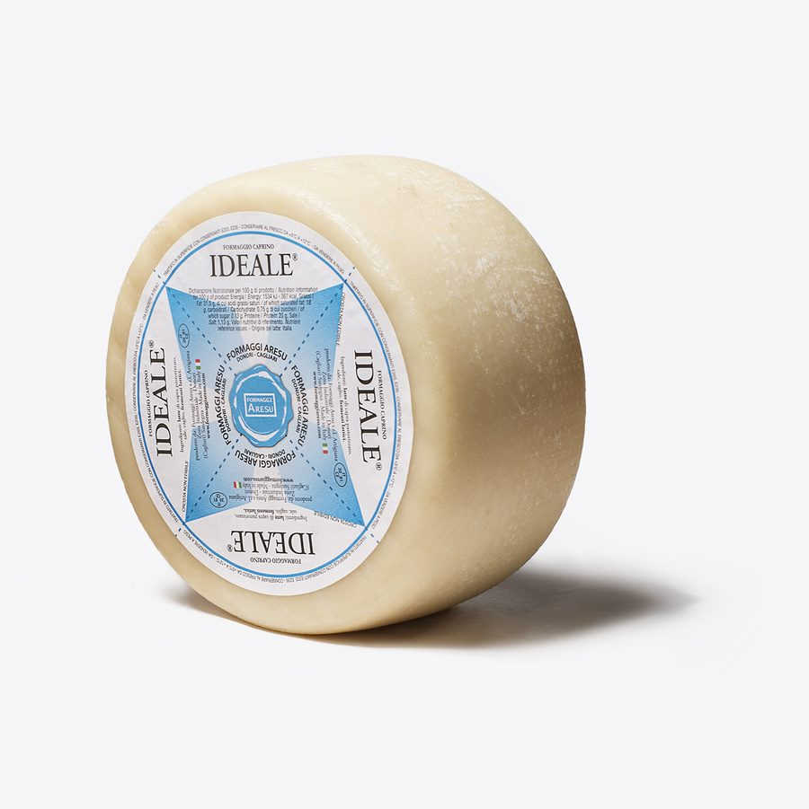
Caprino fresco, con 30 giorni di maturazione. Pasta bianca ed elastica, dal gusto delicato e leggero. Ottimo in cucina.
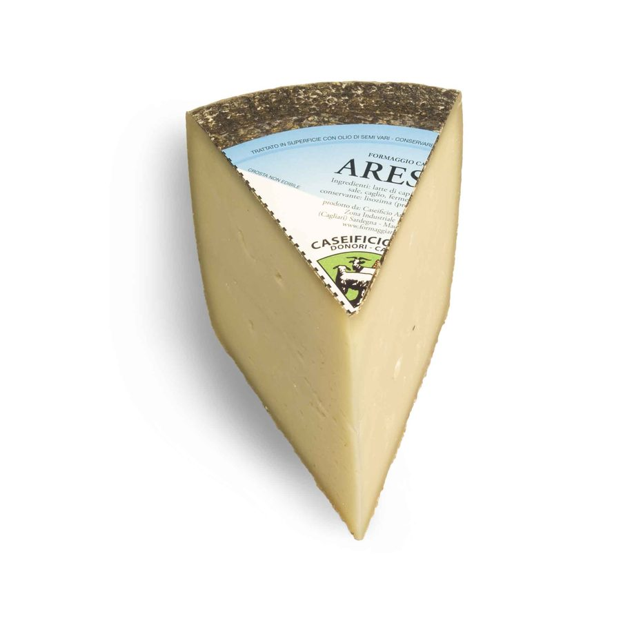
Caprino da tavola. Stagionatura di 3 mesi. Crosta naturale, consistenza friabile, gusto equilibrato e ricco di note aromatiche.
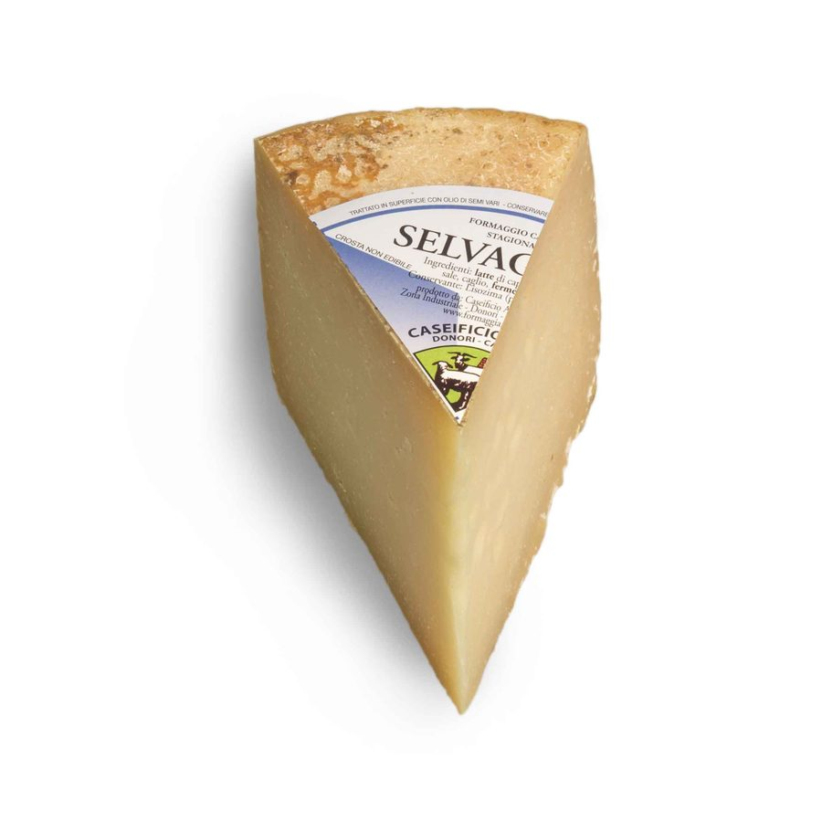
Caprino stagionato classico. Matura per almeno 7 mesi nei nostri locali, sviluppando un aroma unico, completo e stabile.
Caprino stagionato superiore a lunga maturazione. Stagionato almeno 12 mesi, sviluppa un aroma intenso. Note armoniose della macchia mediterranea. Ideale in qualsiasi momento del pasto.
Le note dolci del latte fresco di mucca locale si uniscono al sapore del latte di pecora. I prodotti stagionano su assi di legno massello, che imprimono una firma indelebile su ogni forma. In questa categoria, spicca il Granaresu, top di gamma, ormai un riferimento nel mercato nazionale ed internazionale.
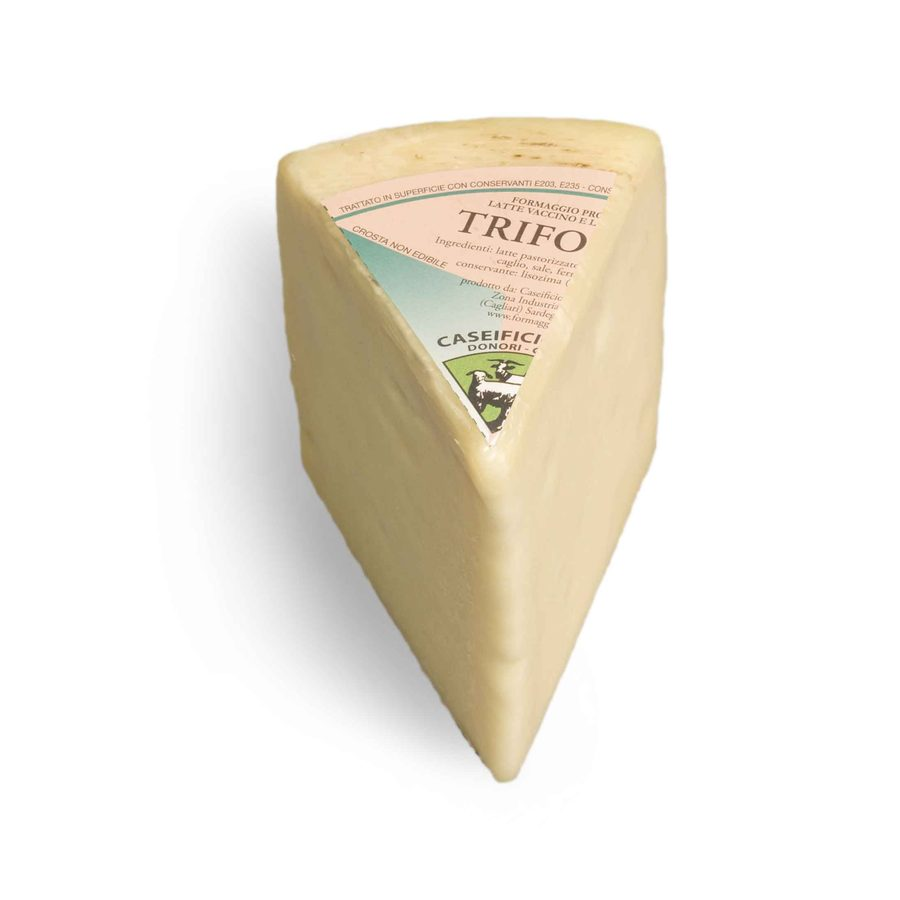
Formaggio molle, stagionatura 20-30 gg. Pasta elastica ed adesiva. Gusto dolce. Disponibile in diversi formati, ideale in cucina ed arrosto.
Formaggio tradizionale italiano, senza stagionatura. Gusto dolce, profumo delicato. Ideale accompagnato da verdure e fresche insalate.
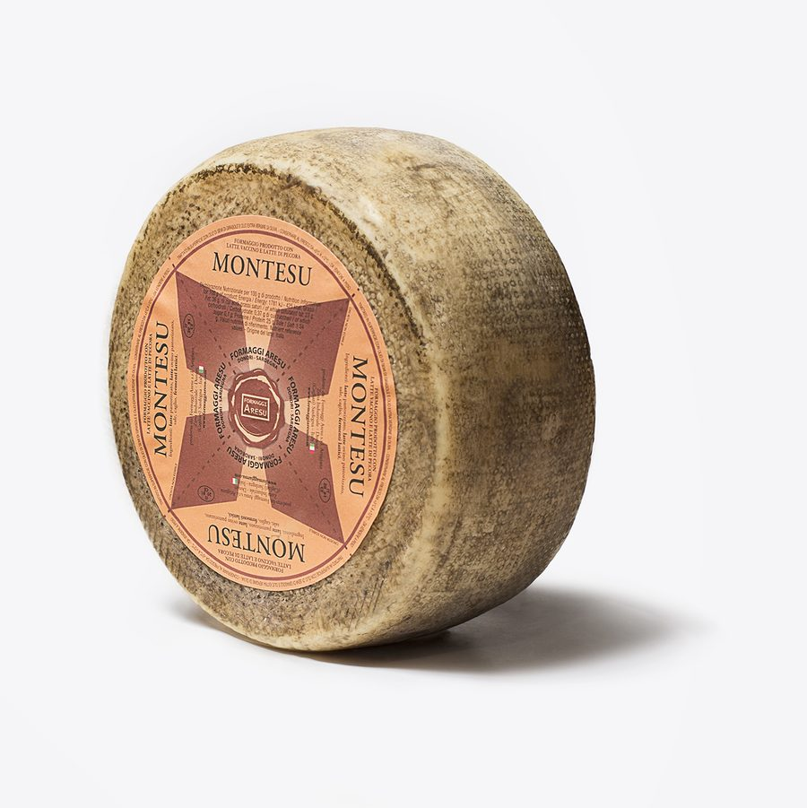
Formaggio da tavola stagionato tre mesi. Pasta grassa, adesiva, che abbina il dolce del latte di mucca, al gusto unico del latte di pecora.
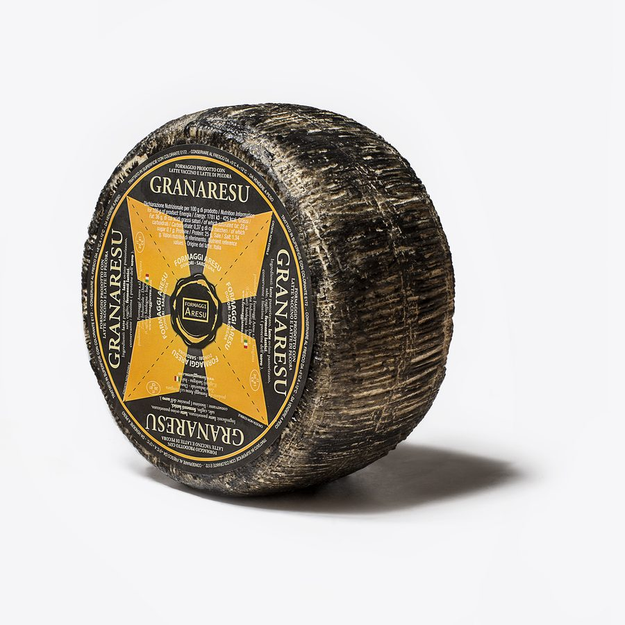
Superiore a lunga maturazione, stagionato almeno 12 mesi. Dolce al palato con un sapore deciso e persistente. Ricorda aromi di latte fresco e fieno appena tagliato. Pasta granulosa, friabile, compatta. Valido per ogni momento del pasto o come contorno.
La ricotta fatta alla vecchia maniera: fuoco e sale marino di Sardegna. Nessun additivo, né panna o grassi, solo sapienza e mani esperte. Garantiamo a tutta l’ampia gamma, dalle fresche alle stagionate, un valore ed un gusto inconfondibile e tradizionale.
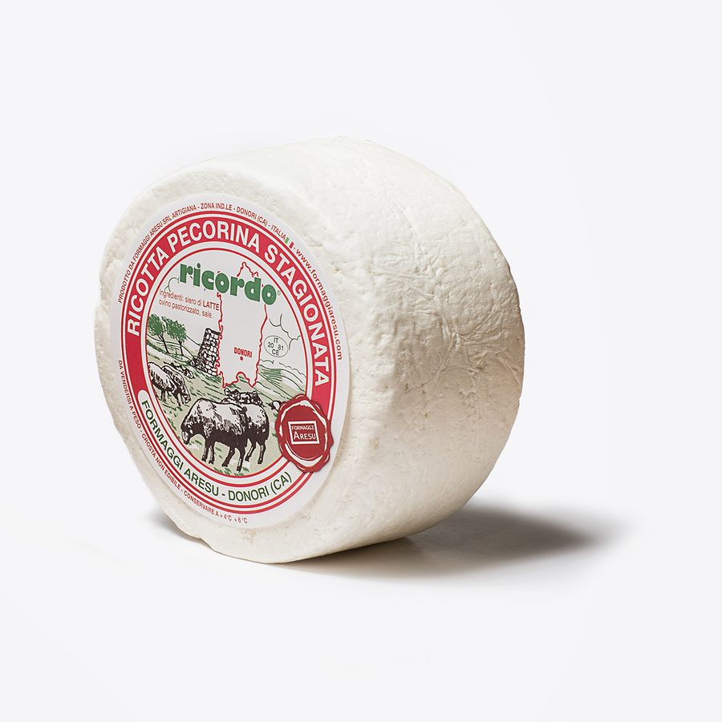
Ricotta pecorina stagionata, lavorata esclusivamente a mano con sale marino locale. Disponibile per consumo da tavola, e nei piccoli formati da grattugia e al peperoncino biologico.
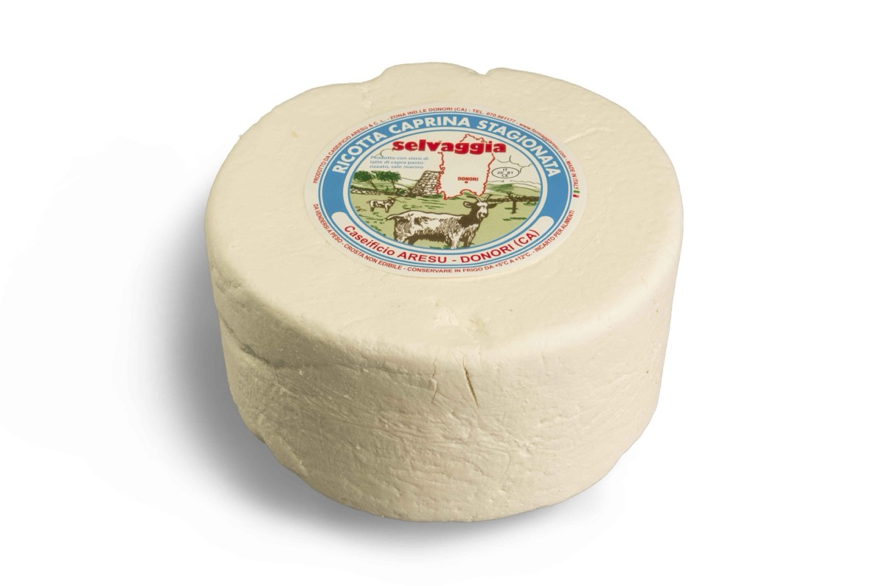
Ricotta caprina stagionata. Sempre più apprezzata per la sua leggerezza, abbina un gusto delicato alla duttilità di utilizzo.
In Sardegna il mondo dei formaggi è un vero e proprio universo. Fin dall’era nuragica le popolazioni locali trasformavano il fresco latte in tanti modi e varianti. La famiglia Aresu aggiorna costantemente la gamma con delizie innovative legate alla tradizione casearia sarda: creme spalmabili, grattugiati e formaggi freschi aromatizzati.
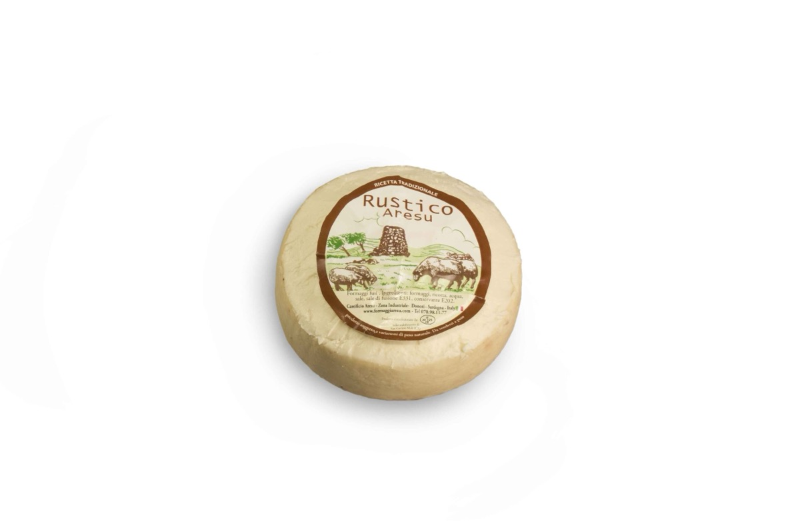
Crema di pecorino, dalla consistenza rugosa, nel formato unico e caratteristico. Gusto molto intenso dovuto alla selezione di solo formaggi stagionati che non vengono rielaborati così da tenere intatto il gusto deciso dei formaggi maturi.
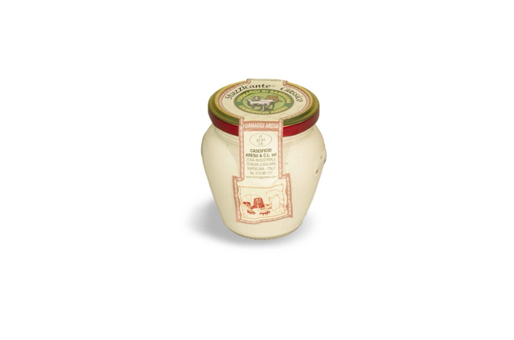
Crema di formaggi, disponibile in tante varianti, anche personalizzate, per le moderne esigenze della ristorazione. Pratico e gusto stuzzicante.
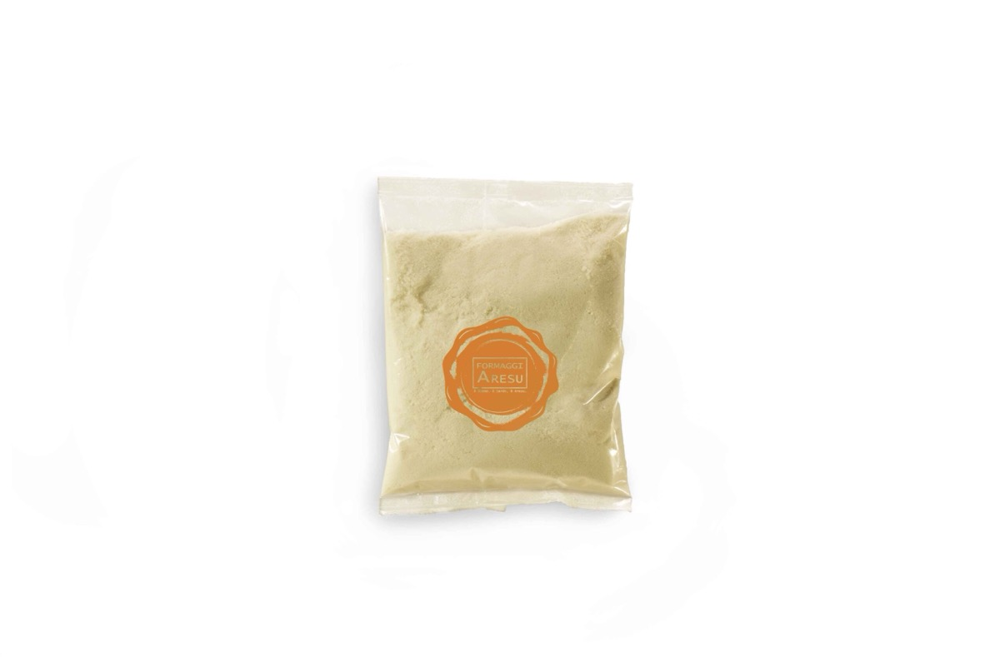
Il mix di formaggi e ricotte rende questo mix di grattugiati ideale per ogni preparazione o condimento.
Formaggio erborinato “crosta lavata”, dal grande carattere. Pasta grassa e burrosa. Affinato nei nostri locali, sotto sapienti cure, capaci di esaltare le caratteristiche del fresco latte sardo.
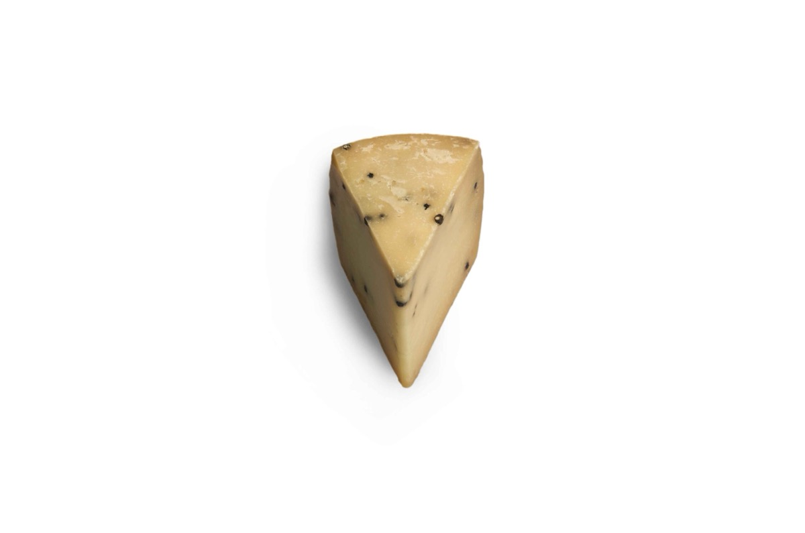
Pecorino e pepe nero: storico abbinamento che lega la Sardegna alle regioni meridionali dell’Italia. È qui che questo connubio viene maggiormente apprezzato.
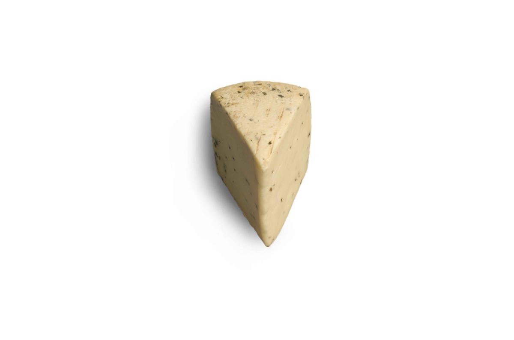
Provalo arrosto, quando il dolce del formaggio si abbina al gusto sobrio dell’erba cipollina.
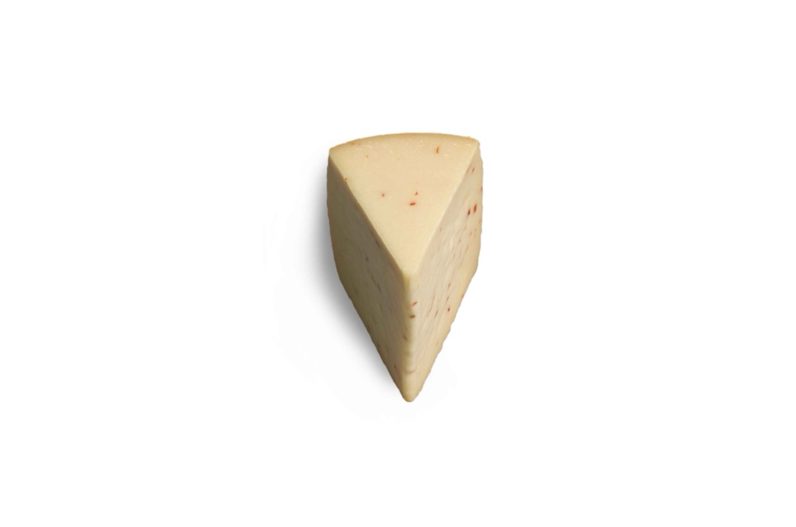
Formaggio speziato al peperoncino biologico. Prodotto in Sardegna.
Una gamma di formaggini freschi arricchiti con spezie e gusti della tradizione mediterranea: la novità Formaggi Aresu del 2020. Formato pratico da 200gr a peso variabile, ideale per libero servizio e gastronomia take away.
Prodotti venduti al pezzo, peso indicativo.
Le foto dei prodotti e delle etichette possono subire variazioni in base alla stagionalità del prodotto o alle modifiche legislative da apportare sulle etichette. Richiedete direttamente qualsiasi informazione all’indirizzo mail: info@formaggiaresu.com